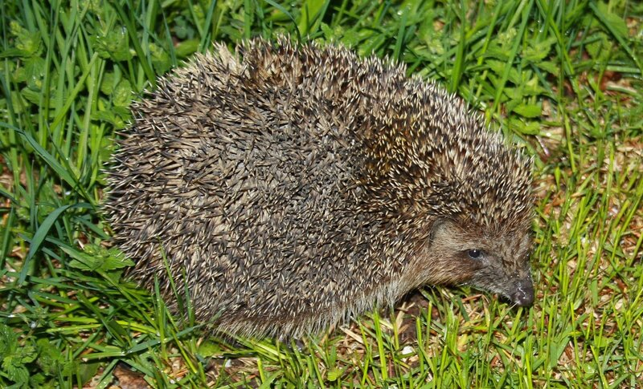
Коптил я небо божие,
Носил ливрею царскую,
Сорил казну народную. (с)
Дважды довелось участвовать и в парадах на Красной площади, причем первый раз - в параде в честь 20-летия Победы, первом параде 9 мая после 1945 года. Бок о бок с будущими героями-подводниками, Героями Советского Союзе, адмиралами нашего российского флота. Праздник близкий по духу, но все же не такой, чтобы есть кашу из полевых кухонь на фоне фешенебельных ресторанов, танцевать "осенний вальс" на потеху любопытствующей молодежи, спешащей в свои дискотеки и увешивать специально сшитый мундир килограммами заслуженного и незаслуженного металла.
Помню, как-то пригласили нас с женой на какое-то официальное мероприятие. Одна из записных дам таких вечеров, увешанная наградами бог знает какого достоинства, стала выговаривать жене, почему она не надела свои награды. (Жена ребенком пережила блокаду Ленинграда и ей положено было, как жителю блокадного города, получать все юбилейные и памятные медали последнего времени, вот и набралось на небольшой иконостас). Жена ответила: "Перед матерью стыдно, она нас в блокаду спасла, а нашей в том заслуги нет". Сколько таких, перед которыми шапку сними - и все им спасибо от нас, других они не получили, ушли из жизни, не подозревая, что были героями.
Поэтому в День Победы я уезжаю из Москвы туда, где по-своему чтут павших и живых еще геров. В нашей деревне восемь ветеранов войны. Староста деревни, певчий из храма неподалеку, собрал жителей, чтобы испросить их общего согласия выделить "из водяных денег" (собираем на поддержание в порядке водокачки) по двести рублей на подарки героям войны: бутылку водки и кое-какие гостинцы.
Возражений не было.
Как водится, посмотрели парад. Что-то понравилось, что-то не очень. Операторы ТВ - квалификации никудышной.
А после парада - за труды праведные, до вечера, до "шашлыков". Внучка была очень довольна - погода - чудо, ежи - строем ходят, соловьи заливаются, да и блага цивилизации доступны. Сады в цвету, закат - тихий и ласковый. Необыкновенный май. Всем вам, мои друзья, здоровья и радости. С праздником.
Вот несколько фотографий с этого праздника жизни.
Главный по настроению
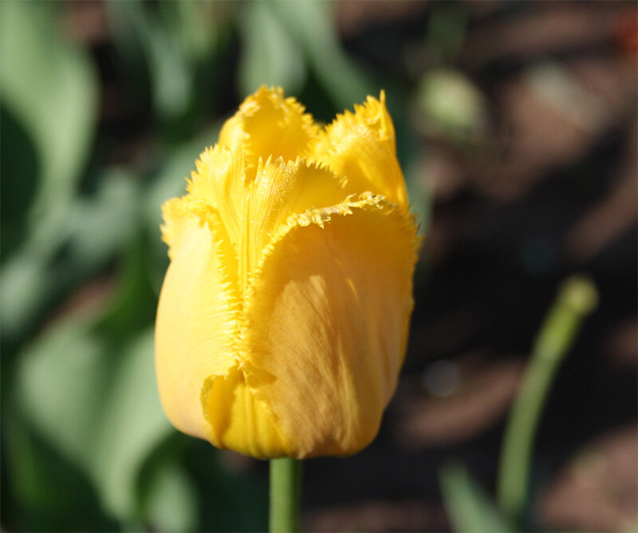
Главный по месяцу
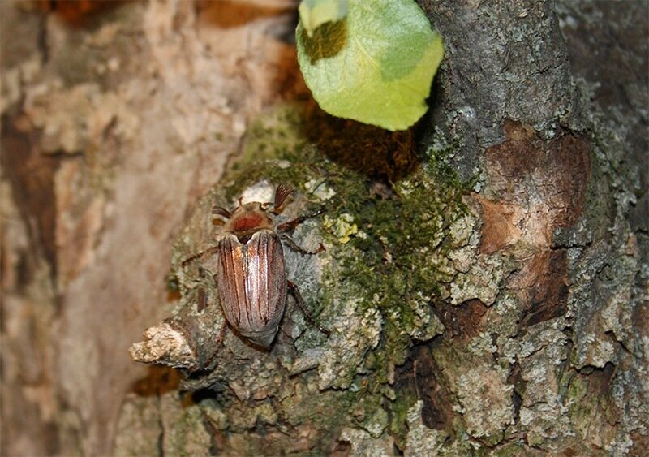
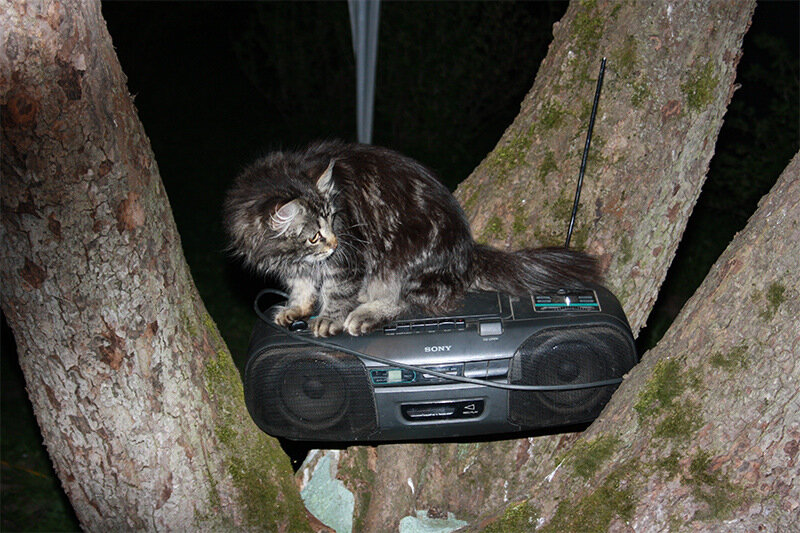
Время зажигать костер
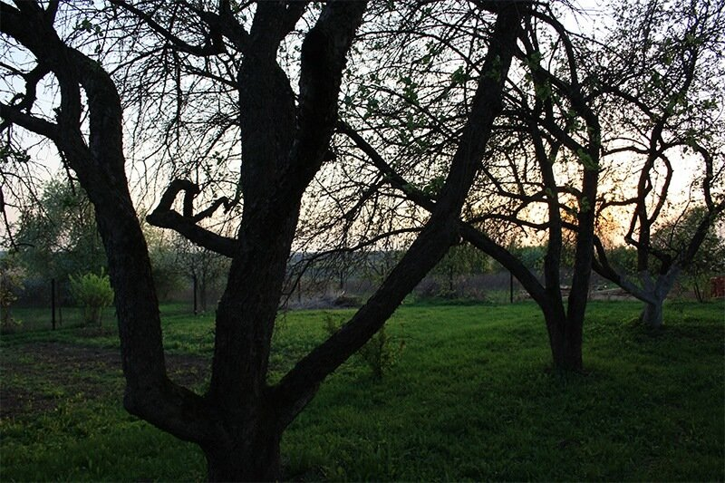
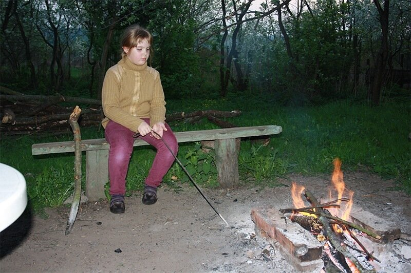
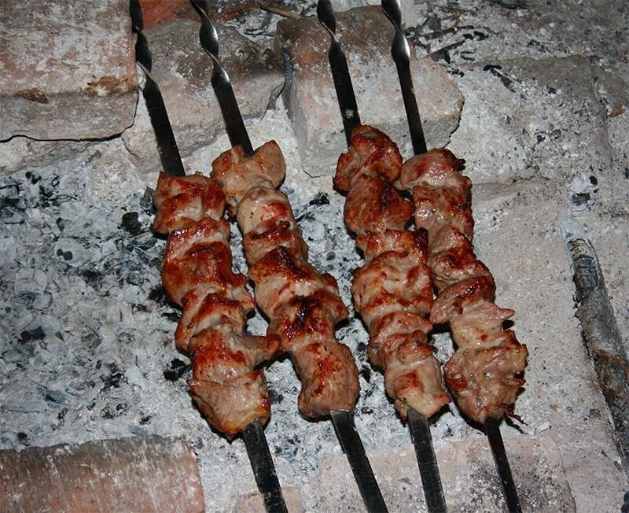
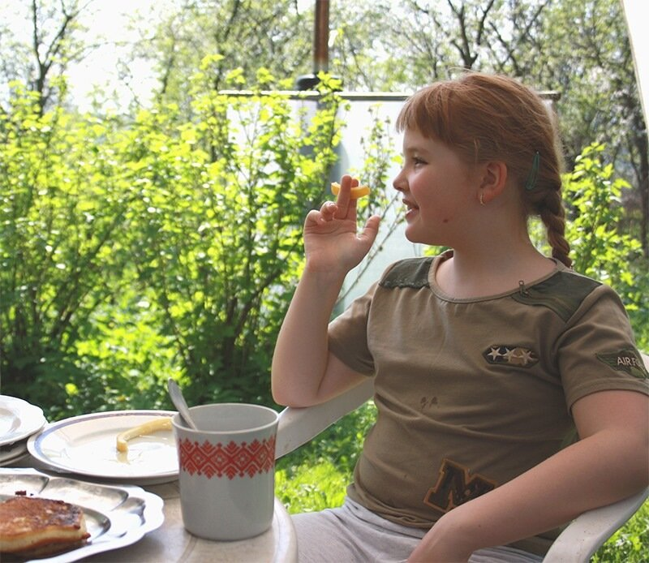
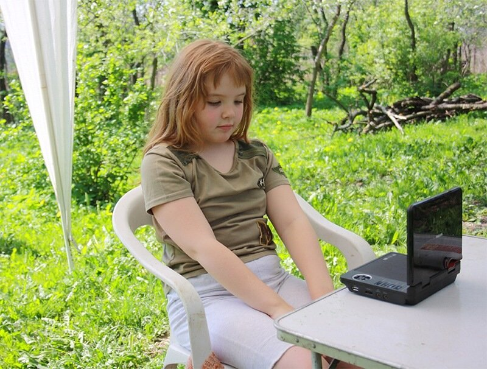
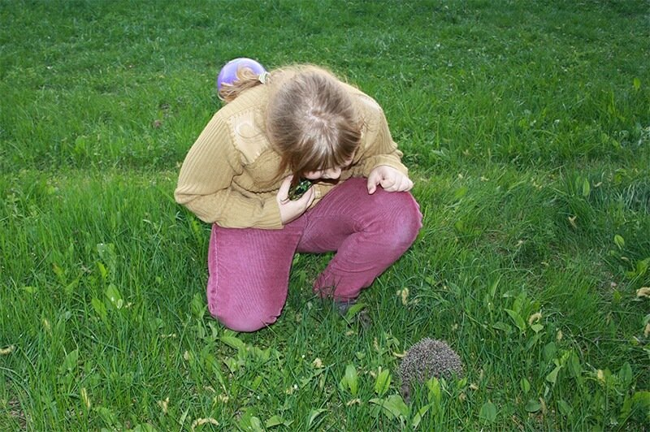
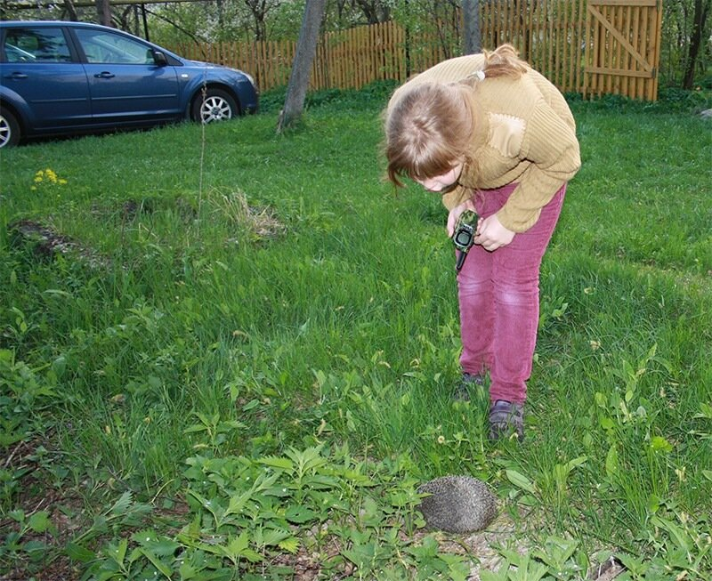